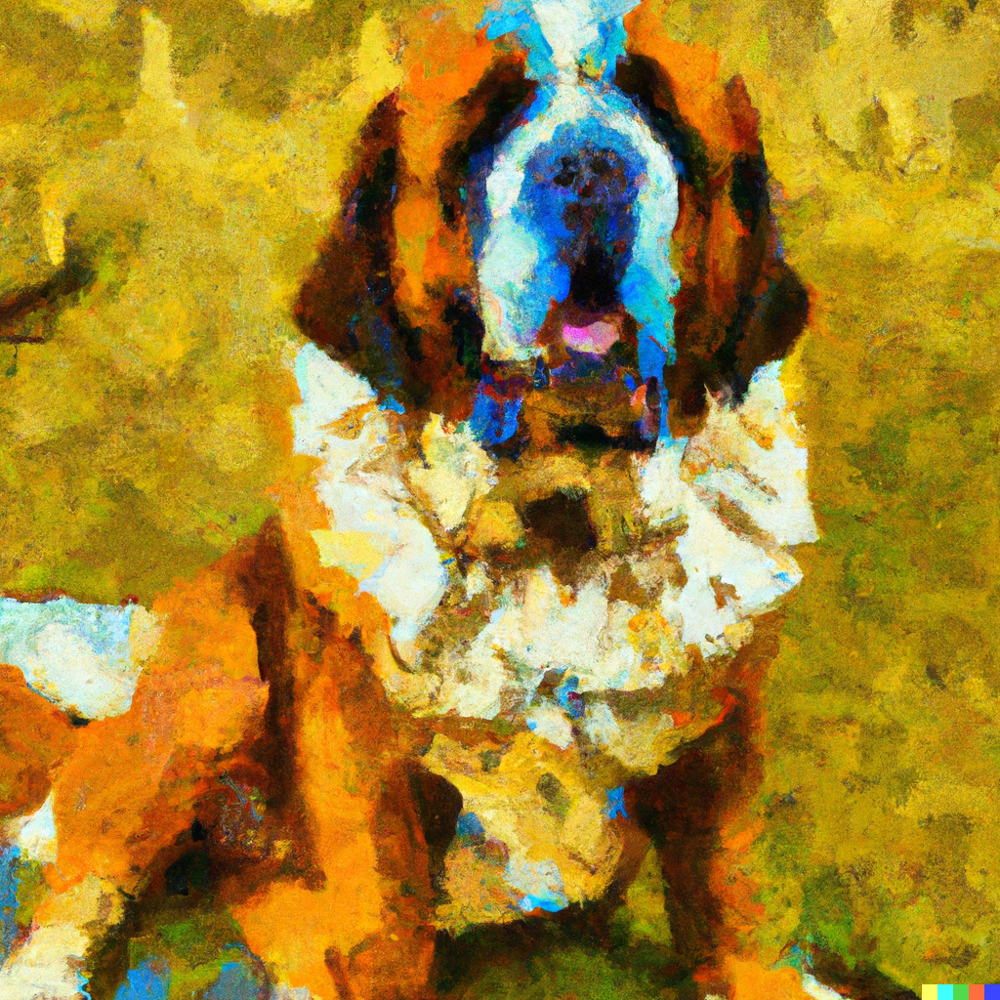

About Me
As a transition year student, I developed this website to learn about coding and SEO. Hope you like it.
Contact UsAbout Gunter
Gunter is a Sanit Bernewfie and our family pet. His father was full St Bernard, and his mother a full Newfoundland. He's nearly 3 years old and weighs a mere 80Kg.
View Gallery